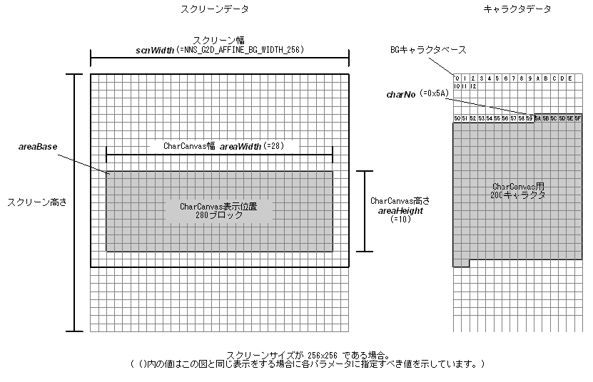

#include <nnsys/g2d/g2d_CharCanvas.h>
void NNS_G2dMapScrToCharAffine(
void* areaBase,
int areaWidth,
int areaHeight,
NNSG2dAffineBGWidth scnWidth,
int charNo
);| areaBase | [OUT] Pointer to screen corresponding to upper-left corner of CharCanvas display. |
| areaWidth | [IN] CharCanvas width (in character units) |
| areaHeight | [IN]CharCanvas height (in character units) |
| scnWidth | [IN] Screen width |
| charNo | [IN] Character No. at starting point of characters assigned to CharCanvas |
None.
Configures Affine BG screen so it can display CharCanvas.
Specify one of the following for scnWidth:
| NNS_G2D_AFFINE_BG_WIDTH_128 | Screen width is 128 pixels (screen size is 128x128) |
| NNS_G2D_AFFINE_BG_WIDTH_256 | Screen width is 256 pixels (screen size is 256x256) |
| NNS_G2D_AFFINE_BG_WIDTH_512 | Screen width is 512 pixels (screen size is 512x512) |
| NNS_G2D_AFFINE_BG_WIDTH_1024 | Screen width is 1024 pixels (screen size is 1024x1024) |

05/25/2005 Initial version.